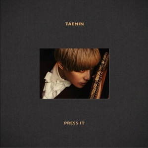

|
|
|
 |
달콤한 소금 - 언젠간 이 비도 그치겠죠
태민 – Soldier
- 달콤한 소금은 2009년에 데뷔하여 보컬인 김정아와 프로듀서인 김손손으로 구성되어있고, 어쿠스틱 사운드를 중심으로 따뜻하고, 감성적인 음악을 추구
- 이 노래는 힘들었던 하루를 위로받는 느낌이어서 자기 전에 듣기 좋은 노래
한줄기 달빛이
어쩌다 그댈 비추더라도
끊어진 다리 앞에서 울게 되나요
-
태민은 샤이니의 멤버로 이 앨범은 태민의 두 번째 앨범
이 노래는 태민이 직접 퍼포먼스를 구상하며 사랑하는 사람을 지키고 싶은 마음을 군인에 비유해 작사
내 안에 너를 놓아주려 해
이제 너를 정리하려고 해
풀지 못했어 오해를 여태
|
|